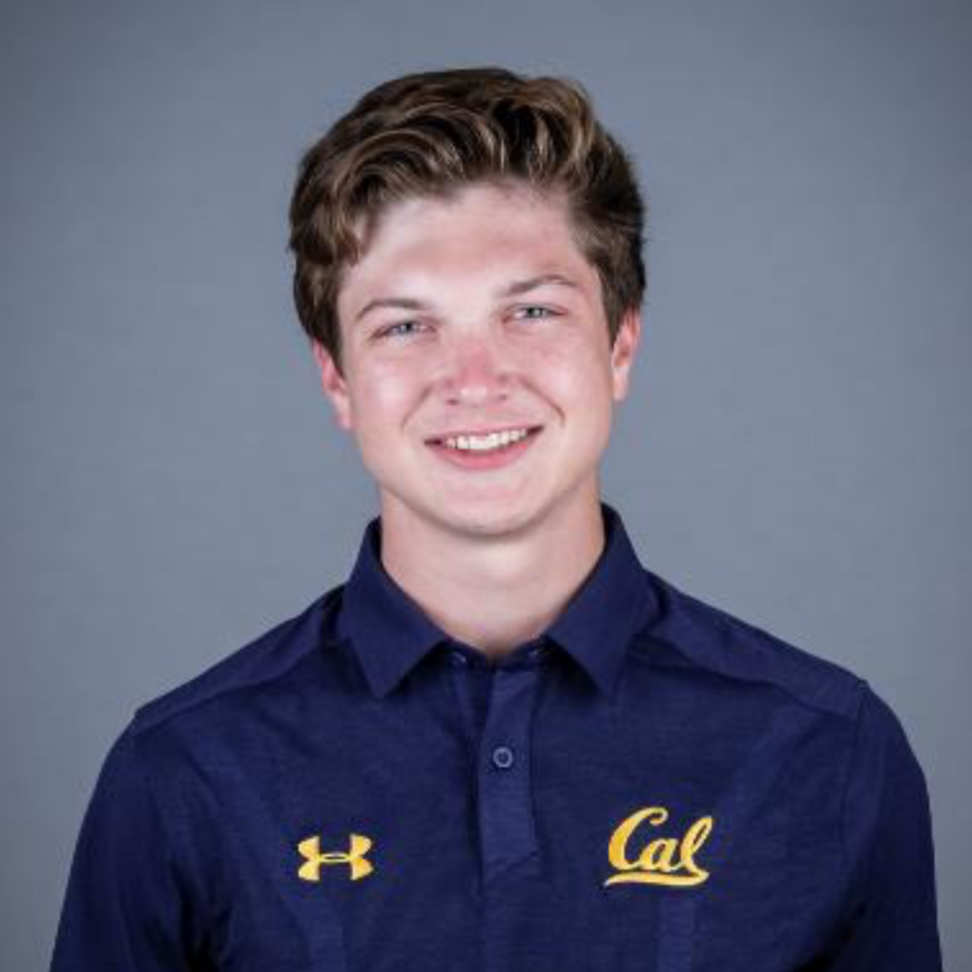

Hunter Hall
UC Berkeley
Astrophysics major
Zephyrus & Talos
hall AT berkeley DOT edu
Here goes a bio, Innovation to Flight Projects seek to facilitate a rapid maturation of new concepts, and their test and validation in flight demonstrations. 2018 pilot studies will involve fast development and prototyping, with regular flight tests at the end of the summer, or a plan to test soon after. Prototypes will be mechanical, electrical or robotics systems, and would be tested in an atmospheric platform, some in balloon and some in UAVs. The candidates will assist in preparing technology for flight tests and validation and improve flight. Skills in the areas of systems engineering, mechanical, electrical, power, communications or computer engineering. Prior experience with balloons or UAVs is desired.
Home